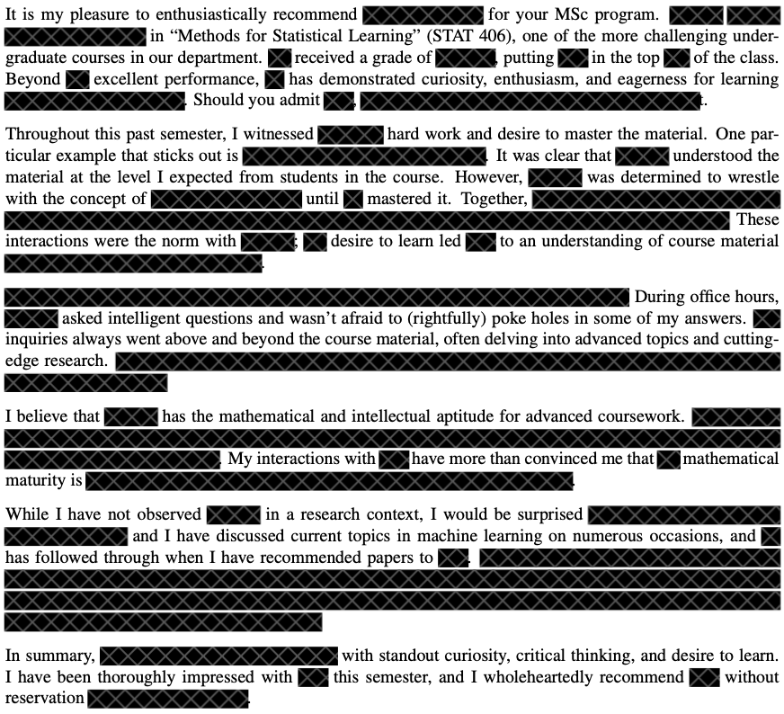
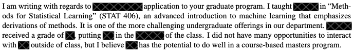

Methods for Statistical Learning
Stat 406
Geoff Pleiss
Last modified – 09 September 2025
\[ \DeclareMathOperator*{\argmin}{argmin} \DeclareMathOperator*{\argmax}{argmax} \DeclareMathOperator*{\minimize}{minimize} \DeclareMathOperator*{\maximize}{maximize} \DeclareMathOperator*{\find}{find} \DeclareMathOperator{\st}{subject\,\,to} \newcommand{\E}{E} \newcommand{\Expect}[1]{\E\left[ #1 \right]} \newcommand{\Var}[1]{\mathrm{Var}\left[ #1 \right]} \newcommand{\Cov}[2]{\mathrm{Cov}\left[#1,\ #2\right]} \newcommand{\given}{\ \vert\ } \newcommand{\X}{\mathbf{X}} \newcommand{\x}{\mathbf{x}} \newcommand{\y}{\mathbf{y}} \newcommand{\P}{\mathcal{P}} \newcommand{\R}{\mathbb{R}} \newcommand{\norm}[1]{\left\lVert #1 \right\rVert} \newcommand{\snorm}[1]{\lVert #1 \rVert} \newcommand{\tr}[1]{\mbox{tr}(#1)} \newcommand{\brt}{\widehat{\beta}^R_{s}} \newcommand{\brl}{\widehat{\beta}^R_{\lambda}} \newcommand{\bls}{\widehat{\beta}_{ols}} \newcommand{\blt}{\widehat{\beta}^L_{s}} \newcommand{\bll}{\widehat{\beta}^L_{\lambda}} \newcommand{\U}{\mathbf{U}} \newcommand{\D}{\mathbf{D}} \newcommand{\V}{\mathbf{V}} \]
Who am I?
Geoff Pleiss
- geoff.pleiss@stat.ubc.ca
- http://geoffpleiss.com/
- Assistant Professor, Department of Statistics
- Research interests: machine learning
- Uncertainty quantification
- Sequential decision making
- Deep learning
- ML for science

TAs

Atabak Eghbal
Junsong Tang

Parsa Delivary
Who are You?
- Stats major?
- Took STAT 306?
- Took CPSC 340?
- Feel “knowledgable” about ML?
- Need this course to graduate?
This Course
Goal:
- Develop deep statistical intuitions about prediction and learning
- Draw connections between modelling/learning paradigms
Assumptions:
- You have familiarity with linear models (STAT 306) or ML basics (CPSC 340)
- You are willing to put in the work!
Differences from Prior Courses
If You’ve Taken STAT306
- Risks analyses
- High dimensional learning methods
- Non-linear learning methods
- Non-parametric learning methods
- Unsupervised learning methods
- “Modern” methods (deep learning/ensembles)
If You’ve Taken CPSC340
- Surface level: mostly same content
- Under the hood: more depth/stats
- Statistical modelling/model selection
- Bias-variance tradeoff
- Curse of dimensionality
- Black-box computational methods
- Generative versus discrminative modelling
Course Content and Learning Outcomes
What is Statistical Learning?
A history lesson
Early AI, Summers, and Winters
- 1950s: “intelligent machines”, Turing test
- 1960s-80s: Early perceptrons, rule-based systems, hype cycles
- 1970s-80s: AI winter(s)


What is Statistical Learning?
Meanwhile, in Statistics Land…
Statisticians are developing frameworks for reasoning, predicting, and making decision from data.
- 1800s (Legendre and Gauss): predicting form data (least squares)
- 1910s (Fisher): estimating unknown parameters (MLE)
- 1940s (Shannon): quantifying information in data (information theory)
- 1950s (Wald): making decisions from data (decision theory)
- 1970s-80s: blackbox computer-based algorithms (bootstrap, MCMC)
🧐 Aren’t these the same goals that the AI community has? 🧐
What is Statistical Learning?
Statistians Guide AI
- 1980s (Vapnik, Chervonenkis): statistical learning theory
- Study learning general knowledge from data
- Mathematical formalism for when learning is possible
- 1990s-2000s: new algorithms based on stats
- Support vector machines
- Bagging/random forests
- Topic modelling
- Applications in the new internet economy (search, ads, product recommendations)
- AI \(\rightarrow\) machine learning

What is Statistical Learning?
Statisticians Play Catch-Up
- 2010s: deep learning revolution
- Stats: ideas as “unprincipled”
- CS: see lots of empirical success
- 2020s: generative AI
- Breakthroughs come from scale (more data, more compute)
- Big gap between theory and practice
- Core ideas are stat. learning principles

Course Learning Outcomes
- Formulate and analyze machine learning algorithms from a statistical perspective
- Categorize learning methods through multiple criteria
- Draw connections between any two learning algorithms and paradigms
- Reason about which methods are most appropriate for a given situation
- Apply these methods correctly, troubleshoot common pitfalls, and identify probable steps for improving
- Implement and utilize models in R using best coding practices
6 Modules
Each module has a technical content theme (and a statistical principles theme)
- Basic regression/classification (statistical modelling/selection)
- Linear methods, regularization, featurization (bias-variance tradeoff)
- Nonparametric methods (curse of dimensionality)
- Unsupervised learning (generative vs. discriminative modelling)
- Ensembles (black-box methods)
- Deep learning
Logistics / Syllabus
Course Components
- In-Class (discussion, mathematical derivations)
- Labs (coding, tools, how-tos)
- Homework Assignments (synthesis, debugging, analysis)
- Final Exam (all of the above)
Grading Structure
Knowledge Based (40 points)
| Component | Points |
|---|---|
| Midterm | 10 points |
| Final | 30 points |
| Total | 40 points |
Effort Based (60 points)
| Component | Points |
|---|---|
| In-Class | 15 points |
| Labs | 20 points |
| Homework | 40 points |
| Total | 60 points |
🧐 15 + 20 + 40 > 60??? 🧐
| Component | Points |
|---|---|
| In-Class | 15 points |
| Labs | 20 points |
| Homework | 40 points |
| Total | 60 points |

\[\text{effort} = \min\left\{60, \text{class} + \text{lab} + \text{hw}\right\}\]
Get 60 of the 75 total points any way your want
- Skip class + perfect on labs/homework = 60 points
- Miss 1 homework + get in-class points = 60 points
In-Class
Class Structure
- Lecture: I’ll go over content
- Derivations: You’ll do math in groups
- Discussions: We’ll analyze content together
- Clickers: You’ll apply your knowledge (in pairs)
Important
8am is hard.
Attendance is optional.
Reasons to Skip Class
If you’re sleep deprived
Getting more sleep may be beneficial to your learning in the long runIf you’re not going to engage/participate
Lectures are recorded, watch on your own timeIf you’re going to have your laptop open
Do your homework/social media browsing/k-pop video watching in the comfort of your own home; then revisit the course material on your own time
Reasons to Attend Class (without Distractions)
1. Time to Think/Digest/Struggle with the Material
- Developing deep intuitions takes time/effort.
- Class gives you 3 hours/week to chew on the material.
- I’ll pace the material accordingly
Reasons to Attend Class (without Distractions)
2. In-Class is Where We Wrestle with Math
- There is lots of math in the course
- We will spend time in class working through derivations together
- Working through derivations builds intuitions and deep knowledge
- Few opportunities on labs/homeworks for this kind of work
Reasons to Attend Class (without Distractions)
3. Questions and Discussions
- There’s plenty of online materials that teach you this content (books, videos, etc)
- There’s few opportunities to discuss content with peers/experts
- If you’re graduating this year, this course may be one of your last opportunities for this type of learning!
Reasons to Attend Class (without Distractions)
4. Effort-Based Points
- If you skip class, you’ll need to get a perfect grade on labs/homeworks to get a maximum effort-based grade
- If you attend class, you can skip a homework, mess up on all of them, and still get a perfect grade!
Reasons to Attend Class (without Distractions)
5. Recommendation Letters
What I Write for Students who Attend/Participate/Ask Questions 
What I Write for Students who Just “Show Up”
I don’t get to know you, so all I can talk about is your grade.

TLDR
- Waking up early, avoiding distractions, and participating is hard
- If you don’t have the energy or mental bandwidth on any given day, give yourself the gift of staying home.
- If you come in, be prepared to engage and put in effort.
- You’ll get a lot out of attending/engaging. I’ll make sure of it!
Earning Points
Participation (5 points)
- We will (try to) use Agora for virtual “hand-raising”
- 1 point for “raising” your hand
- 1 point if you are called on (assigned randomly by Agora)
- Grade: \(\min\left\{ 5, 5 \frac{n_\mathrm{points}}{n_\mathrm{classes\_w/\_agora}} \right\}\)
Clickers (10 points)
- We will use iClicker for questions that are similar to the midterm/final
- 0 points for skipping, 2 points for trying, 4 points for correct
- Average of 3 = 10 points (the max)
- Average of 2 = 5 points
- Average of 1 = 0 points
- Grade: \(\max\left\{ 0, \min\left\{ 5 \frac{n_\mathrm{points}}{n_\mathrm{questions}} - 5, 10 \right\} \right\}\)
- Be sure to sync your device in Canvas.
Labs / Assignments
Mechanics and Grading
The goal is to “Do the work”
Labs
Labs should give you practice, allow for questions with the TAs.
They are due at 2300 on Friday, lightly graded.
You may do them at home, but you must submit individually (in lab, you may share submission)
Labs are lightly graded
Assignments
Not easy, especially the first 2, especially if you are unfamiliar with R / Rmarkdown / ggplot
You may revise to raise your score to 7/10, see Syllabus. Only if you lose 3+ for content (penalties can’t be redeemed).
Don’t leave these for the last minute
Tools: R and Github
Language/Libraries: R + Tidyverse
Submission: via Github
Important
We assume you’re familiar with these tools (R, Tidyverse, Git, Github)
If you’re not, it’s your responsibility to get up-to-speed with them.
See Canvas for tutorials / the website for resources.
Workflow
You each have your own repo
You make a branch
DO NOT rename files
Make enough commits (3 for labs, 5 for HW).
Push your changes (at anytime) and make a PR against
mainwhen done.TAs review your work.
If you want to revise HWs, make changes in response to feedback and push to the same branch. Then “re-request review”.
Generative AI Policy
- AI tools are quite capable with this material (I use them frequently in my own work!)
- Strong recommendation: Use AI as little as possible to maximize learning
- If you use AI, use it to supplement your thinking (code completion, rewriting) not replace your thinking (feeding entire assignments to chatbots)
Why Minimize AI Use?
Deep intuitions require struggle
The only way to develop intuitions about challenging material is to wrestle with contentStand out from the crowd
Anyone can use Claude/Copilot for simple ML. Demonstrate thinking beyond these tools will make you more hireable/trustedCourse-specific subtleties
Even with good prompting, chatbots likely won’t score above 7-8 on assignmentsNo AI on exams
Don’t become too dependent on tools you can’t use during midterm/final
If you Use Generative AI…
Self-reporting required:
- Describe your AI usage on all assignments and labs.
- Include all prompts you use.
- Please be honest (it’ll help me improve the course/your learning experience)
- No grade penalty
Late policy
If you have not submitted your lab/assignment by the time grading starts, you will get a 0.
| When you submit | Likelihood that your submission gets a 0 |
|---|---|
| Before 11pm on due date (i.e. on time) | 0% |
| 11:01pm on due date | 0.01% |
| 9am after due date | 50% |
| 2 weeks after due date | 99.99999999% |
Exception: when you have grounds for academic consession. (See the UBC policy.)
Tip
Remember: you can still get a “perfect” effort grade even if you get a 0 on one assignment.
Reading/Textbook
Textbooks
An Introduction to Statistical Learning
James, Witten, Hastie, Tibshirani, 2013, Springer, New York. (denoted [ISLR])
Available free online: http://statlearning.com/
The Elements of Statistical Learning
Hastie, Tibshirani, Friedman, 2009, Second Edition, Springer, New York. (denoted [ESL])
Also available free online: https://web.stanford.edu/~hastie/ElemStatLearn/
- Each class has a “required” reading from Introduction to Statistical Learning
No quizzes/knowledge demonstration/accountability for not reading, but please do them! - Reading before class will improve your preparation/ability to engage
Knowledge-Based Assessment
Exams
Midterm Exam
- In-class, October 23
- It is hard
- Computer-based
- T/F, multiple choice, etc.
Final Exam
- Scheduled by the university.
- It is hard
- The median last year was 50% \(\Rightarrow\) A-
- Format: TBD
Philosophy
- If you put in the effort, you’re guaranteed a C+.
- To get an A+, you need to deeply understand the material.
- No penalty for skipping the midterm/final.
Time expectations per week:
Coming to class – 3 hours
Reading the book – 1 hour
Labs – 1 hour
Homework – 4 hours
Study / thinking / playing – 1 hour
Resources
Computer

We will use R and we assume some background knowledge.
Suggest you use RStudio IDE
See https://ubc-stat.github.io/stat-406/ for what you need to install for the whole term.
Links to useful supplementary resources are available on the website.
Other Resources
Course website
All the material (slides, extra worksheets) https://ubc-stat.github.io/stat-406Canvas (minimal)
Quiz 0, grades, course time/location info, links to videos from classSlack
Discussion board, questionsGithub
Homework / Lab submission
Final Words of Wisdom
- 8am is hard. But you can do it!
- I strongly urge you to get up at the same time everyday.
- If you need help, please ask!
- I’m here to encourage you, get you un-stuck, and ponder ML mysteries with you
- Think of this course as preparation for a race/performance/etc.
- You have to work out/practice, and there’s no shortcuts.
- Training is hard, but you’ll be pleased with the outcome if you put in the work.
- We’re here to help you stay excited and motivated on your journey!
- Join me on a fun exploration of cool material!
Questions?
TODOs
By EOD Tomorrow:
- Read the syllabus
- Install the R package, read docs, check your LaTeX installation
BE SURE to follow the Computer Setup instructions on the website! - Take Quiz 00 on Canvas
Before Next Tuesday:
- Sign up for Slack (see Canvas)
- Sign up for Agora (details on Canvas)
- Link your iClicker account with Canvas
- (If needed) watch Github and R tutorials
UBC Stat 406 - 2024